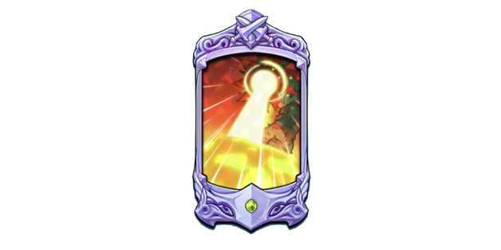

COUP ULTIME

COUP(S) ULTIME : TRUE SPIRIT SPEAR CHASTIEFOL, FOURTH FORM: SUNFLOWER | 真・霊槍シャスティフォル、第四形態 「光華」
Nullifie tous les malus sur les alliés et nullifie tous les bonus sur tous les ennemis, pour chaque bonus enlevé sur l'ennemi, augmente les dégâts reçus de 2% pendant 1 tour(s). Inflige des dégâts égaux à 400% de l'attaque à tous les ennemis.
Multiplicateur: 40%
400/440/480/520/560/600